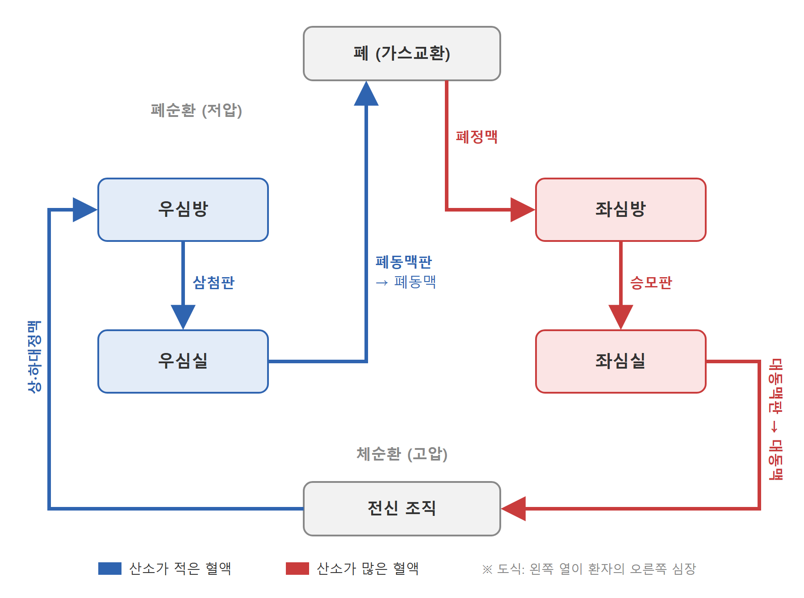
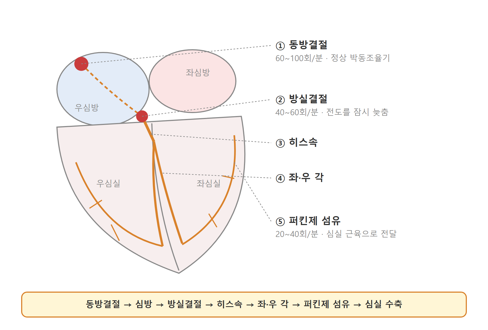
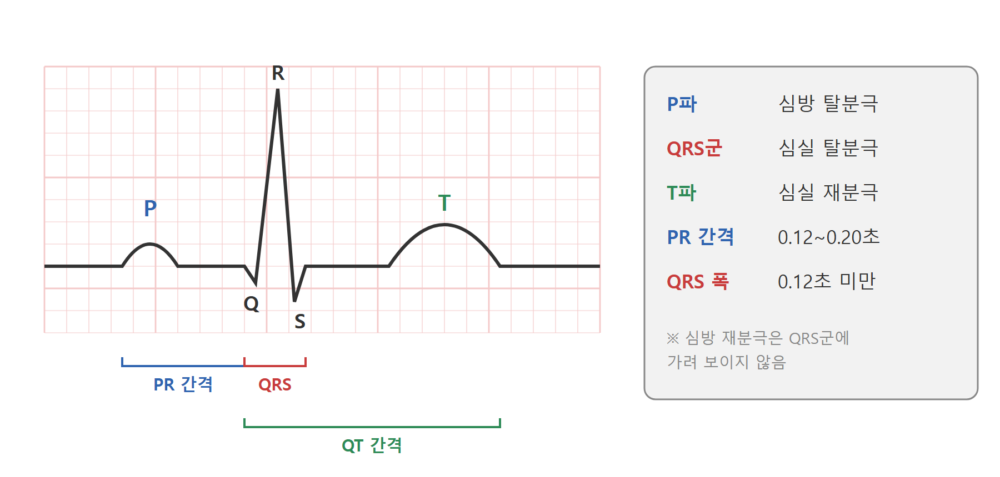
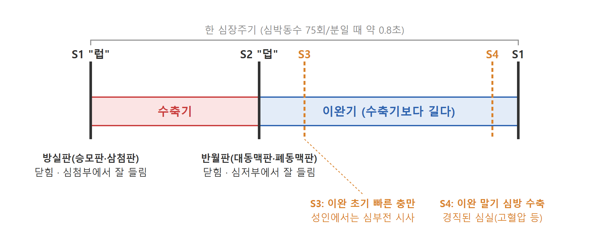
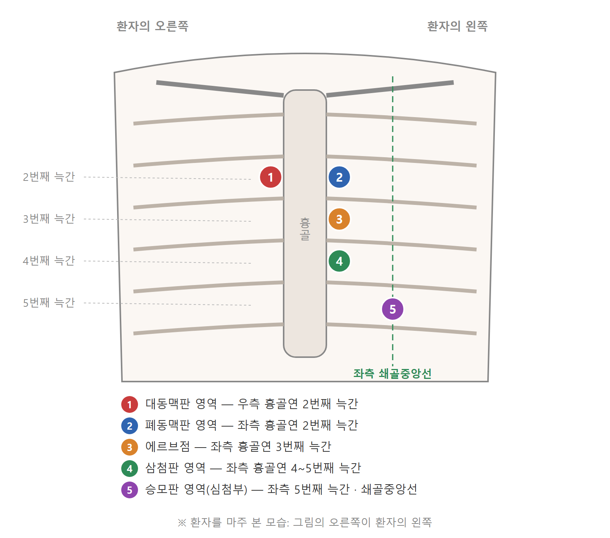
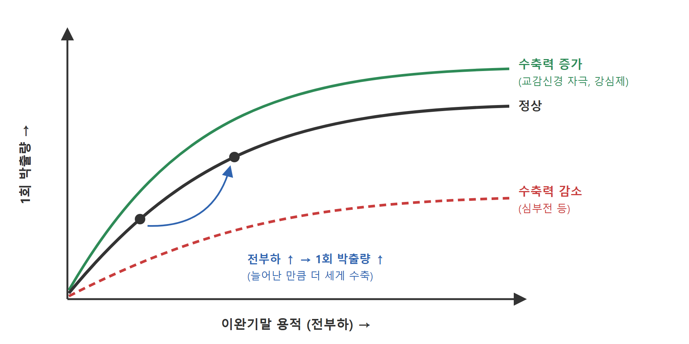
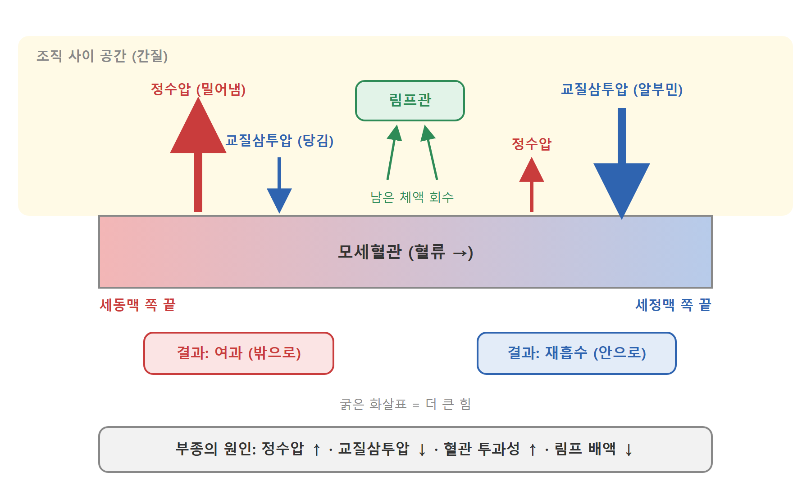
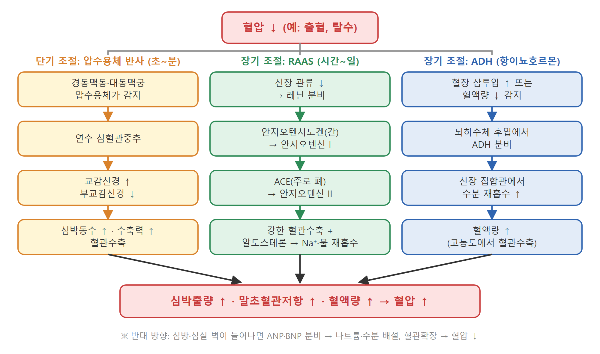

◎
학습목표
이 수업을 마치면 학생은 다음을 할 수 있다.
- 심장의 위치, 심장벽, 심방·심실, 판막의 구조를 설명할 수 있다.
- 관상동맥의 주요 분지와 각 분지가 혈액을 공급하는 부위를 연결할 수 있다.
- 심장 전도계의 순서와 심전도 파형(P, QRS, T)의 의미를 설명할 수 있다.
- 심장주기와 심음(S1~S4)의 발생 시점을 설명하고 청진 부위를 찾을 수 있다.
- 심박출량을 결정하는 요인(심박동수, 전부하, 후부하, 수축력)을 설명할 수 있다.
- 동맥·모세혈관·정맥의 구조적 차이와 기능을 비교할 수 있다.
- 혈압 조절의 단기·장기 기전을 설명할 수 있다.
- 노화에 따른 순환기계 변화와 간호사정 시 유의점을 말할 수 있다.
1
순환계 개요
- 순환계는 심장(펌프), 혈관(관), 혈액(운반 매체)으로 구성된다.
- 주요 기능: 산소·영양소 운반, 이산화탄소·대사산물 제거, 호르몬 운반, 체온 조절, 면역세포 운반
두 개의 순환 경로
폐순환 · 저압계
우심실 → 폐동맥 → 폐 → 폐정맥 → 좌심방
가스교환이 일어난다.
가스교환이 일어난다.
체순환 · 고압계
좌심실 → 대동맥 → 전신 → 상·하대정맥 → 우심방
💡
헷갈리기 쉬운 점폐동맥은 정맥혈을, 폐정맥은 동맥혈을 운반한다.
2
심장의 구조
2-1. 위치와 크기
- 흉강의 종격동 안, 흉골 뒤쪽에 위치하며 약 2/3가 정중선 왼쪽에 있다.
- 심첨(apex)은 대개 좌측 5번째 늑간과 쇄골중앙선이 만나는 부위에 있다 → 최대박동점(PMI) 촉진 위치
- 크기는 대략 본인 주먹 정도, 무게는 성인에서 약 250~350 g
2-2. 심막과 심장벽
| 구분 | 구성 | 특징 |
|---|---|---|
| 섬유성 심막 | 질긴 결합조직 | 심장을 보호하고 과도한 확장을 막음 |
| 장막성 심막 | 벽측판 + 장측판(=심외막) | 두 층 사이 심막강에 소량의 심막액이 있어 마찰을 줄임 |
| 심외막 | 심장벽 바깥층 | 관상혈관이 지나감 |
| 심근층 | 심장근육 | 실제 수축을 담당, 좌심실 벽이 가장 두꺼움 |
| 심내막 | 내피세포층 | 판막을 덮고 혈관 내막과 이어짐 |
🩺
간호 연결심막강에 액체가 빠르게 차면 심장이 충분히 확장하지 못한다(심장눌림증, cardiac tamponade).
2-3. 심방·심실과 판막
- 4개의 방: 우심방, 우심실, 좌심방, 좌심실
- 좌심실은 체순환의 높은 압력을 이겨야 하므로 우심실보다 벽이 훨씬 두껍다.
- 판막은 혈액이 한 방향으로만 흐르도록 한다.
| 판막 | 위치 | 종류 |
|---|---|---|
| 삼첨판 | 우심방 ↔ 우심실 | 방실판 |
| 승모판(이첨판) | 좌심방 ↔ 좌심실 | 방실판 |
| 폐동맥판 | 우심실 ↔ 폐동맥 | 반월판 |
| 대동맥판 | 좌심실 ↔ 대동맥 | 반월판 |
- 방실판은 건삭과 유두근에 연결되어 심실 수축 시 판막이 심방 쪽으로 뒤집히지 않게 한다.
2-4. 혈액이 흐르는 순서
상·하대정맥→우심방→삼첨판→
우심실→폐동맥판→폐동맥→
폐→폐정맥→좌심방→
승모판→좌심실→대동맥판→
대동맥→전신

2-5. 관상순환
| 동맥 | 주요 공급 부위 |
|---|---|
| 좌전하행지(LAD) | 좌심실 앞벽, 심실중격 앞쪽, 심첨 |
| 좌회선지(LCx) | 좌심방, 좌심실 옆벽·뒤벽 |
| 우관상동맥(RCA) | 우심방, 우심실, 좌심실 아래벽, 대부분의 사람에서 동방결절·방실결절 |
- 관상동맥 관류는 주로 이완기에 일어난다 → 심박동수가 빨라져 이완기가 짧아지면 심근 관류가 줄어든다.
- 정맥혈은 관상정맥동을 통해 우심방으로 돌아간다.
🩺
간호 연결어느 관상동맥이 막혔는지에 따라 심근경색 부위와 동반되는 부정맥 양상이 달라진다(예: RCA 폐색 시 서맥·방실차단 동반 가능).
3
심장 전도계와 심전도
3-1. 전도 경로
동방결절(SA node)→심방→방실결절(AV node)→
히스속→좌·우 각→퍼킨제 섬유→심실 근육
60~100
동방결절 (회/분)
정상 심박조율기
정상 심박조율기
40~60
방실결절·접합부 (회/분)
동방결절 이상 시 대신 박동
동방결절 이상 시 대신 박동
20~40
심실·퍼킨제 섬유 (회/분)
마지막 보조 조율기, 박출량 부족
마지막 보조 조율기, 박출량 부족
- 방실결절에서 전도가 잠시 지연되어 심방이 수축을 끝내고 심실이 채워질 시간을 확보한다.
- 심근세포는 자동능, 흥분성, 전도성, 수축성의 특성을 가진다.

3-2. 심전도 기본 파형
| 파형·간격 | 의미 | 정상 기준(성인) |
|---|---|---|
| P파 | 심방 탈분극 | — |
| PR 간격 | 심방에서 심실까지 전도 시간 | 0.12~0.20초 |
| QRS군 | 심실 탈분극 | 0.12초 미만 |
| T파 | 심실 재분극 | — |
| QT 간격 | 심실 탈분극~재분극 전체 | 심박동수에 따라 보정(QTc) |
- 심방 재분극은 QRS군에 가려져 보이지 않는다.

3-3. 자율신경의 영향
교감신경 (β1 수용체)
심박동수 ↑ · 전도속도 ↑ · 수축력 ↑
부교감신경 (미주신경)
주로 동방·방실결절에 작용
심박동수 ↓ · 방실전도 ↓
심박동수 ↓ · 방실전도 ↓
4
심장주기와 심음
4-1. 심장주기
- 한 번의 심장박동 동안 일어나는 수축기(systole)와 이완기(diastole)의 반복
- 심박동수 75회/분일 때 한 주기는 약 0.8초이며, 이완기가 수축기보다 길다.
- 심실 충만기(이완기): 방실판 열림, 혈액이 심실로 유입, 마지막에 심방 수축(atrial kick)으로 추가 충만
- 등용성 수축기: 모든 판막이 닫힌 채 심실 압력 상승
- 심실 박출기: 반월판 열림, 혈액 박출
- 등용성 이완기: 모든 판막이 닫힌 채 심실 압력 하강
4-2. 심음
| 심음 | 발생 원인 | 시점 | 잘 들리는 곳 | 의미 |
|---|---|---|---|---|
| S1 ("럽") | 방실판(승모판·삼첨판) 닫힘 | 수축기 시작 | 심첨부 | 정상 |
| S2 ("덥") | 반월판(대동맥판·폐동맥판) 닫힘 | 이완기 시작 | 심저부 | 정상 |
| S3 | 이완 초기 빠른 심실 충만 | S2 직후 | 심첨부(종형 청진기) | 소아·젊은 성인은 정상일 수 있음, 성인에서는 심부전 시사 |
| S4 | 경직된 심실로 심방이 혈액을 밀어 넣음 | S1 직전 | 심첨부(종형 청진기) | 고혈압, 좌심실 비대, 심근허혈 등 |

4-3. 청진 부위
| 부위 | 위치 |
|---|---|
| 대동맥판 영역 | 우측 흉골연 2번째 늑간 |
| 폐동맥판 영역 | 좌측 흉골연 2번째 늑간 |
| 에르브점 | 좌측 흉골연 3번째 늑간 |
| 삼첨판 영역 | 좌측 흉골연 4~5번째 늑간 |
| 승모판 영역 | 좌측 5번째 늑간과 쇄골중앙선 교차점(심첨부) |

5
심박출량과 결정 요인
심박출량(CO) =
심박동수(HR) × 1회 박출량(SV)
심박동수(HR) × 1회 박출량(SV)
4~8 L/분
성인 정상 심박출량
60~100 mL
1회 박출량
55~70%
박출률(EF)
확장기말 용적 중 박출되는 비율
확장기말 용적 중 박출되는 비율
1회 박출량을 결정하는 세 가지 요인
| 요인 | 정의 | 높이는 상황 | 낮추는 상황 |
|---|---|---|---|
| 전부하(preload) | 이완기말 심실이 늘어난 정도(이완기말 용적) | 수액 과다, 신부전 | 탈수, 출혈, 이뇨제 |
| 후부하(afterload) | 심실이 혈액을 내보낼 때 이겨야 하는 저항 | 고혈압, 대동맥판 협착, 혈관수축 | 혈관확장제 |
| 수축력(contractility) | 전부하와 관계없는 심근 자체의 수축 힘 | 교감신경 자극, 디곡신, 도부타민 | 심근경색, 저산소증, 산증, β차단제 |
📈
프랑크-스탈링 법칙일정 범위 안에서는 심근이 많이 늘어날수록(전부하 ↑) 더 강하게 수축한다. 그 범위를 넘으면 오히려 박출량이 줄어든다(심부전).

6
혈관의 구조와 기능
6-1. 혈관벽의 3층
내막
내피세포, 혈액과 직접 닿음중막
평활근과 탄력섬유, 혈관 지름 조절외막
결합조직, 혈관 지지6-2. 혈관 종류별 비교
| 혈관 | 구조 특징 | 주요 기능 |
|---|---|---|
| 대동맥·큰 동맥 | 탄력섬유 풍부 | 수축기 압력을 받아 늘어났다가 이완기에 되돌아오며 혈류를 이어줌 |
| 세동맥 | 평활근 비율 높음 | 말초혈관저항의 주된 결정 부위, 조직 혈류 분배 |
| 모세혈관 | 내피세포 한 층 | 물질 교환 |
| 세정맥·정맥 | 벽이 얇고 판막 있음 | 혈액 저장(전체 혈액의 약 60~70%), 심장으로 환류 |
- 정맥 환류를 돕는 요인: 정맥 판막, 골격근 펌프, 호흡 펌프(흡기 시 흉강 내압 ↓)
6-3. 모세혈관에서의 체액 이동 (스탈링 힘)
- 정수압: 혈관 밖으로 밀어내는 힘 (동맥 쪽 끝에서 큼)
- 교질삼투압: 주로 알부민에 의해 혈관 안으로 끌어당기는 힘
- 동맥 쪽 끝에서는 여과, 정맥 쪽 끝에서는 재흡수가 우세하며 남는 체액은 림프관으로 돌아간다.
🩺
간호 연결 — 부종의 원인 생각해 보기
- 정수압 ↑: 심부전, 정맥 폐쇄
- 교질삼투압 ↓: 저알부민혈증(간질환, 신증후군, 영양불량)
- 모세혈관 투과성 ↑: 염증, 화상, 패혈증
- 림프 배액 장애: 림프절 절제 후

7
혈압과 혈압 조절
7-1. 기본 개념
혈압 = 심박출량 × 전신혈관저항
맥압 = 수축기압 − 이완기압
MAP ≈ 이완기압 + ⅓ × 맥압
평균동맥압. 주요 장기 관류를 위해 대개 60~65 mmHg 이상이 필요하다.
7-2. 단기 조절 (초~분 단위)
- 압수용체 반사: 경동맥동과 대동맥궁의 압수용체가 혈압 변화를 감지 → 연수의 심혈관중추 → 자율신경 조절
- 혈압 ↑ → 부교감 ↑, 교감 ↓ → 심박동수·수축력 ↓, 혈관확장 → 혈압 ↓
- 혈압 ↓ → 반대 반응
- 화학수용체: 경동맥체·대동맥체가 산소 ↓, 이산화탄소 ↑, pH ↓를 감지하여 호흡과 혈압에 영향
7-3. 장기 조절 (시간~일 단위)
| 기전 | 자극 | 작용 | 결과 |
|---|---|---|---|
| 레닌-안지오텐신-알도스테론계(RAAS) | 신장 관류 ↓, 교감신경 자극 | 안지오텐신 II: 강한 혈관수축, 알도스테론 분비 → 나트륨·수분 재흡수 | 혈압 ↑ |
| 항이뇨호르몬(ADH) | 혈장 삼투압 ↑, 혈액량 ↓ | 신장 집합관에서 수분 재흡수, 혈관수축 | 혈압 ↑ |
| 나트륨이뇨펩타이드(ANP, BNP) | 심방·심실 벽이 늘어남 | 나트륨·수분 배설, 혈관확장, RAAS 억제 | 혈압 ↓ |

🩺
간호 연결ACE 억제제, 안지오텐신 수용체 차단제, 이뇨제, β차단제 등 항고혈압제가 위 기전의 어디에 작용하는지 연결해 보자(약리 수업과 연계). BNP는 심부전 진단·경과 관찰에 쓰이는 혈액검사 지표이다.
8
노화에 따른 순환기계 변화
| 변화 | 결과 | 간호사정 시 유의점 |
|---|---|---|
| 동맥벽 경직 | 수축기압 ↑, 맥압 ↑ | 수축기 고혈압 흔함 |
| 압수용체 민감도 ↓ | 체위 변화 시 혈압 조절 지연 | 기립성 저혈압, 낙상 위험 |
| 동방결절 세포 수 ↓, 전도계 섬유화 | 서맥, 부정맥 증가 | 맥박 리듬 사정 |
| 판막 두꺼워짐·석회화 | 심잡음 | 대동맥판 협착 여부 확인 |
| 좌심실 벽 두꺼워짐, 이완 기능 ↓ | S4 들릴 수 있음, 운동 시 최대 심박동수 ↓ | 활동 내성 사정 |
9
간호사정과의 연결 — 실습 전 정리
❤️ 활력징후
맥박수·리듬·강도, 혈압(양팔 비교, 체위성 혈압), 호흡, 산소포화도👁️ 시진
피부색(청색증, 창백), 경정맥 팽대, 부종, 곤봉지✋ 촉진
최대박동점, 말초맥박(요골·상완·대퇴·슬와·족배·후경골), 모세혈관 재충혈 시간(정상 약 2초 이내), 함요부종 정도🩺 청진
5개 청진 부위에서 S1·S2 확인, 추가 심음·심잡음 여부💬 증상 문진
흉통(양상, 부위, 방사통, 지속시간), 호흡곤란(기좌호흡, 발작성 야간 호흡곤란), 피로, 실신, 두근거림10
수업 진행안 (예시, 100분 기준)
| 시간 | 내용 | 방식 |
|---|---|---|
| 10분 | 도입: 혈액이 흐르는 순서 빈칸 채우기 | 개별 퀴즈 |
| 25분 | 심장 구조, 판막, 관상순환 | 강의 + 심장 모형·그림 |
| 20분 | 전도계, 심전도 기본 파형, 심장주기·심음 | 강의 + 심음 음원 듣기 |
| 10분 | 휴식 | — |
| 20분 | 심박출량, 혈관, 혈압 조절 | 강의 |
| 10분 | 사례 적용: "출혈 환자의 몸은 혈압을 어떻게 지키는가" | 짝 토론 |
| 5분 | 정리 및 확인 문제 | 퀴즈 |
11
확인 문제
먼저 스스로 답해 본 뒤, 문제를 눌러 정답을 확인하세요.
1동방결절의 고유 박동수는 분당 몇 회인가?정답 보기
60~100회
2S1은 어떤 판막이 닫힐 때 나는 소리이며, 어디에서 가장 잘 들리는가?정답 보기
방실판(승모판·삼첨판)이 닫힐 때, 심첨부에서 가장 잘 들린다.
3관상동맥 관류는 심장주기 중 언제 주로 일어나는가? 그 이유는?정답 보기
이완기. 수축기에는 심근이 관상혈관을 눌러 혈류가 줄기 때문이다. 따라서 빈맥으로 이완기가 짧아지면 심근 관류가 감소한다.
4탈수 환자에서 1회 박출량이 줄어드는 이유를 전부하 개념으로 설명하시오.정답 보기
체액량 감소 → 정맥 환류 감소 → 이완기말 심실 용적(전부하) 감소 → 프랑크-스탈링 법칙에 따라 수축력·1회 박출량 감소
5출혈로 혈압이 떨어질 때 몸에서 일어나는 단기·장기 보상 기전을 각각 하나 이상 쓰시오.정답 보기
단기: 압수용체 반사로 교감신경 활성 → 심박동수·수축력 증가, 혈관수축. 장기: RAAS 활성, ADH 분비 → 나트륨·수분 보유, 혈관수축
6저알부민혈증 환자에게 부종이 생기는 이유를 스탈링 힘으로 설명하시오.정답 보기
알부민 감소 → 혈관 내 교질삼투압 감소 → 혈관 안으로 끌어당기는 힘이 약해져 체액이 조직으로 빠져나감
7노인 환자가 침대에서 갑자기 일어설 때 어지러움을 호소하는 이유는?정답 보기
노화로 압수용체 민감도가 떨어져 체위 변화 시 혈압 보상이 늦어지므로 기립성 저혈압이 생긴다.